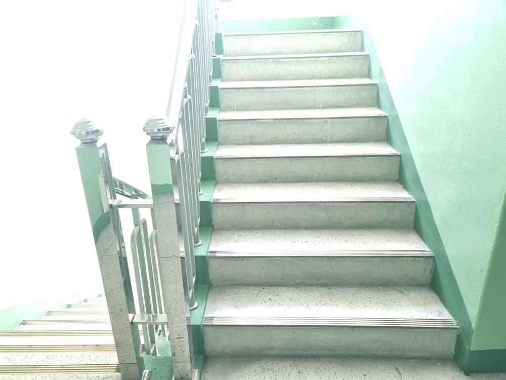

1. 교육기관 "가기 싫어" 하는 원인
아침은 아이를 깨우고, 씻기고, 먹이고, 준비물을 챙겨 교육기관에 보내는 바쁜 시간입니다. 특히 맞벌이 가정에서는 이런 아침 준비가 더욱 분주합니다. 아이가 교육기관에 즐겁게 다니면 문제가 없지만, 교육기관 가기 "싫어"하거나 부모와 떨어지기 "싫어" 하면 문제가 복잡해집니다.
아이들이 교육기관에 가기 싫어하는 원인은 여러 가지가 있습니다:
1) 불안과 두려움
부모와 지나치게 밀착되어 있는 경우, 부모의 병으로 인한 별거, 이혼 등 부정적인 경험을 한 경우에는 분리불안을 겪을 수 있습니다. 또는 새로운 환경, 또래와의 상호작용 부족, 선생님과의 관계 등으로 인해 불안하거나 두려움을 느낄 수 있습니다. 특히 교육기관에서의 부정적인 경험이나 실패에 대한 두려움은 교육기관 가기를 꺼리게 할 수 있습니다. 이는 교육기관에 가기 싫어하거나 신체적 증상을 나타내는 형태로 드러납니다.
2) 부모와 관련된 요인
부모의 성격이나 태도가 아이에게 영향을 줄 수 있습니다. 새로운 상황에 적응하지 못하는 부모, 지나치게 애정을 주는 부모, 가정불화가 있는 부모 등은 아이의 교육기관에 대한 태도에 영향을 미칠 수 있습니다.
3) 학업적 어려움
학업에 대한 스트레스나 과제의 부담, 시험에 대한 두려움 등은 교육기관에 대한 부정적인 태도를 형성할 수 있습니다.
4) 사회적 부적응
아이는 또래 집단 내에서의 괴롭힘, 친구 관계에서의 문제, 사회적 상호작용의 어려움 등은 교육기관에 가고 싶지 않게 만들 수 있습니다. 또는 또래집단의 인원 수가 많은 경우 저항심이나 공포감을 느낄 수 있습니다. 이로 인해 자신의 생각이나 감정을 제대로 표현하지 못하거나, 자신의 의견이나 욕구가 존중받지 못한다고 느낄 때 집단에 적응 및 융화되지 못하고 교육기관에 가기를 싫어할 수 있습니다.
5) 자신의 욕구 관철
아이는 자신이 원하는 것을 얻기 위해 교육기관에 가기 싫다고 부모를 애태우는 행동을 할 수 있습니다. 이로인해 자신감이 부족하거나 자신에 대한 부정적인 인식을 가지고 있을 경우, 교육기관 환경에서 적응하는 데 어려움을 겪을 수 있습니다.
이러한 감정과 생각들을 이해하고, 아동이 겪고 있는 어려움에 대해 공감하는 것이 중요합니다. 부모, 교사, 상담사 등은 아동이 이러한 감정을 표현하고 극복할 수 있도록 다양한 원인을 이해하는 것이 문제를 해결될 수 있습니다.

2. 교육기관 "가기 싫어" 지도방법
교육기관 가기를 꺼리고 싫어하는 아이 지도하는 방법에는 여러 가지가 있습니다.
몇 가지 유용한 전략은 다음과 같습니다.
1) 감정 이해하기
아이와 대화를 통해 왜, 무엇 때문에 교육기관에 가기 싫어하는지, 구체적인 이유를 파악하세요. 분리불안일 경우 아이의 말과 행동으로 나타나는 감정을 경청하고, 내재된 두려움이나 걱정 등 감정을 그림 그리기, 일기 쓰기 등으로 표현할 수 있도록 노력하세요.
2) 일상적인 루틴 구축
매일매일 아침에 일어나는 시간, 스스로 준비하는 방법, 교육기관에 즐겁게 가는 방법 등 일관된 루틴을 만들어 아이가 교육기관에 대해 안정감을 느낄 수 있도록 하세요. 만약에 며칠간 아이와 떨어져 있게 된다면 녹음된 목소리를 들려주거나 화면을 보여 주었을 때 아이는 부모가 어딘가에 있다는 것과 다시 자신을 안아줄 것이라고 확신하게 될 것입니다.
3) 사회적 관계 협력
아이의 담임교사나 교육기관 상담사와 협력하여 아이가 교실이나 또래들에게 느끼는 다양한 어려움을 해결하는 데 도움을 받으세요. 아이가 또래와의 상호 작용을 통해 사회적 기술을 장려하세요.
4) 정서적 지지 제공
아이에게 교육기관에 대한 긍정적인 감정을 갖도록 배려하고 격려해 줍니다. 아이에게 교육기관에 대한 두려움이나 걱정을 해소할 수 있도록 충분히 공감하고 도와주세요.
5) 자존감 증진
아이가 자신감을 갖고 교육기관 생활에 참여할 수 있도록 자존감을 긍정적으로 강화하기 위한 작은 보상이나 칭찬 제공을 지속적으로 실시하세요.
6) 심리적 지원 고려
아이가 지속적으로 교육기관에 가기를 거부하거나 심각한 불안을 경험한다면 전문적인 심리적 지원을 받는 것을 고려하세요.
중요한 것은 아이의 감정을 이해하고일관성있게 지원하며, 교육기관 경험을 긍정적으로 촉진하는 것입니다. 처음에는 아주 작은 집단을 아이에게 경험케 해주어 친구랑 지내는게 습관이 되면 그후에 조금 더 큰 규모의 집단을 경험하게 해주는 방법으로 서두르지 말고 차근차근 단계를 밟아 친구를 갖게해 주는 것이 바람직합니다. 아이의 발달과정 및 성격 등은 다를 수 있으므로 아이의 특정 상황과 필요에 맞게 조정되어야 합니다.
2022.01.01 - [분류 전체보기] - 에릭슨의 심리사회적 발달 8단계-정신분석이론
에릭슨의 심리사회적 발달 8단계-정신분석이론
프로이드(Freud)의 영향을 받은 에릭슨(Erikson)은 심리사회적 이론(psychosocial theory)으로 확대시켜 인간의 의식적 자아와 성장에 접근을 시도하였다. 인간을 창의적이며 합리적 존재로 보았다. 더불
think-sis.co.kr